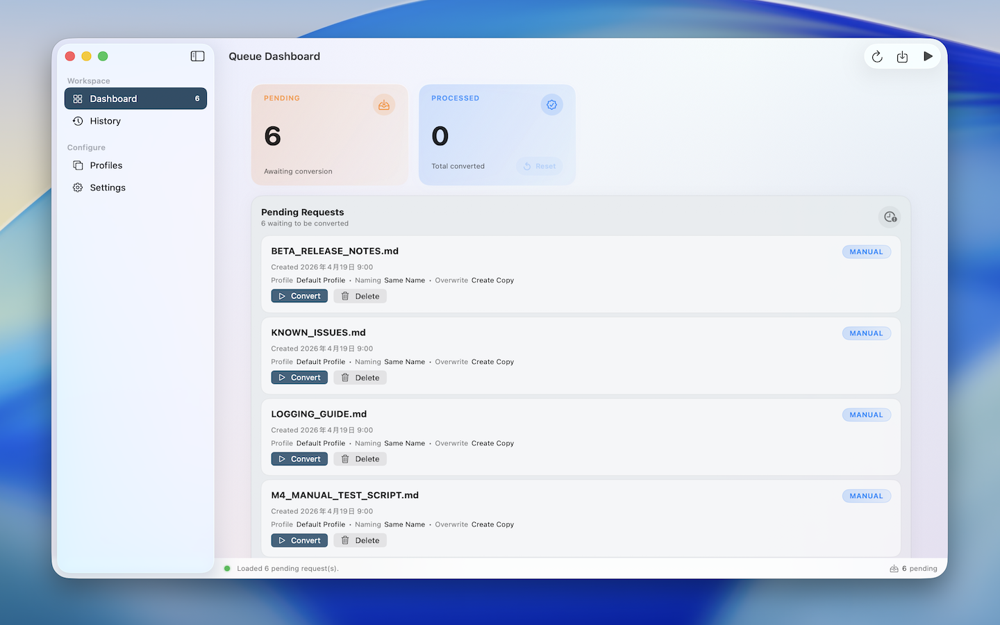

Finder extension + native macOS app
Turn Markdown into polished PDFs without leaving Finder.
MarkdownToPDF is built for writers, engineers, and documentation teams who want local, repeatable exports with batch queues, profiles, and clean print-ready output.
- Right-click .md and .markdown files in authorized Finder folders
- Queue batch jobs and retry failures
- Tune page size, margins, theme, fonts, and naming rules
- Keep everything local inside the app sandbox
Finder requests are handed to the main app, so longer conversions stay stable and easier to manage.

The current codebase uses sandboxed file access and local storage instead of cloud rendering or sign-in flows.
Right from Finder
In folders you explicitly authorize, select one file or many, open the context menu, and send your Markdown straight into the conversion queue.
Built for repeat work
Profiles, naming rules, overwrite policies, and post-conversion actions make repeated exports predictable.
Readable history
Successful exports, failed jobs, retry flows, and output paths stay visible instead of disappearing into a menu.
Localized app UI
The desktop app already ships with English, Simplified Chinese, Traditional Chinese, Japanese, Korean, German, French, and Italian.
Workflow
A calmer way to export Markdown over and over again.
The product architecture keeps the Finder extension light and lets the main app handle rendering, settings, history, and diagnostics.
Select Markdown in an authorized Finder folder
The Finder extension only appears in folders you explicitly authorize, and it targets `.md` and `.markdown` files so the flow starts from a familiar right-click menu.
Let the queue keep long jobs organized
Requests move through a shared queue, giving the main app room to batch, retry, and preserve history without slowing Finder down.
Control the PDF output in one place
Adjust page size, margins, fonts, themes, file naming, overwrite behavior, and what happens after export from the main app.
Control
Tune the PDF, not the Markdown source.
The current release focuses on local rendering quality, practical defaults, and enough controls to keep exported PDFs consistent across repeated runs.
Profile-driven rendering
Pick page size, margins, theme, header/footer, table of contents, body font, code font, size, and line height from reusable profiles.
Output rules that stay predictable
Choose same-name exports, append dates, or custom patterns, then decide whether to replace files, fail fast, or create copies.
Batch-aware post actions
After conversion, the app can do nothing, reveal the PDF in Finder, or open the new file immediately.
Markdown coverage aimed at real documents
The app supports headings, lists, block quotes, fenced code, syntax highlighting, tables, links, images, Mermaid diagrams, math formulas, and typography controls.
Known compatibility boundaries
Task lists, footnotes, and emoji shortcodes are still incomplete, and some custom TeX macros, rare AMS cases, or deeply nested mixed layouts can still hit edge cases.
Local-only by design
The app is sandboxed, uses user-selected file access, and stores queue state, profiles, settings, and history on device.
Screens
A clean desktop surface for queue, history, and settings.
These images come from the current MarkdownToPDF desktop build and show the major workspaces described in the code and release notes.
Queue Dashboard
Monitor pending requests, import Markdown files by drag and drop, and start conversions with a single click.
Rendered Output
Math, diagrams, and syntax-aware code blocks survive the trip to PDF.
The current renderer applies theme-aware color palettes, highlights common languages, and typesets TeX formulas offline before export.
Offline math rendering
Inline and display formulas are typeset before export with bundled MathJax SVG, so the PDF keeps readable equations instead of raw TeX delimiters.
Syntax highlighting for common languages
Swift, Bash, Python, JavaScript, TypeScript, JSON, YAML, SQL, and C-like languages get built-in token highlighting. Unknown languages fall back to clean plain code blocks.
Theme-driven color configuration
System, light, sepia, and dark themes affect document colors, code block chrome, and syntax token colors, so exports can match different reading contexts.
Mermaid and document structure
Mermaid fenced blocks render as diagrams, and headings can become PDF outline and bookmark entries for easier navigation in long documents.
Support Matrix
What the app supports in the current release.
This page is based on the current source code, release notes, support matrix, and known issues in the MarkdownToPDF repository.
Available today
- Headings, paragraphs, horizontal rules, and block quotes
- Ordered and unordered lists, inline code, fenced code blocks, and syntax highlighting
- Tables, alignment, links, images, relative asset paths, Mermaid, and offline math rendering
- Themes, page sizes, margins, outline bookmarks, naming rules, and post-export actions
Known compatibility boundaries
- Task lists, footnotes, and emoji shortcodes are not fully implemented yet
- Custom TeX macros, external extensions, and rare AMS scenarios can still need fallback
- The table of contents setting is saved, but it does not generate a visible TOC page yet
- Header and footer settings currently render the document footer only, and very large images can still miss the render window
Privacy Policy
MarkdownToPDF is designed to work on your Mac, not in the cloud.
The policy below reflects the current app architecture, entitlement files, and repository documentation as of April 19, 2026.
What the app accesses
Only the Markdown files and folders you explicitly choose, plus local app settings, profiles, history records, and queue metadata.
What the app does not require
No account creation, no subscription login, no analytics SDK, and no document upload service in the current app.
How data stays local
The app is sandboxed and uses user-selected file permissions plus an App Group container for Finder-to-app job handoff.
1. Information the app processes
MarkdownToPDF processes the source documents you select, the output locations you choose, and locally stored settings such as render profiles, naming defaults, conversion history, and pending queue records.
2. Why that information is used
That information is used only to render PDFs, manage queued conversions, reopen or reveal generated files, remember your preferences, and show conversion results or failures inside the app.
3. Network, tracking, and third parties
Based on the current repository and sandbox entitlements, the app does not include cloud rendering, analytics tracking, advertising SDKs, or account systems, and it does not upload document content to remote servers as part of normal use.
4. Storage and retention
Preferences, profiles, queue state, and history are stored locally on your device. Generated PDFs remain in the folder you choose. You can remove the app, clear records, or revoke folder access through system and app settings.
5. Your controls
You control which files and folders the app can access, whether the Finder extension is enabled, which output location is used, and whether history entries remain stored locally.
6. Policy updates
If the app architecture changes in a future release, this policy should be updated together with the release notes and website so the documented behavior stays accurate.